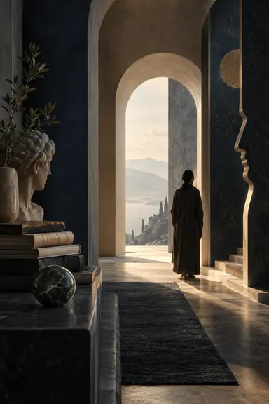

A learning journal
Belief, Knowledge
& Life
As we learn to make a place for ourselves in the world, what is the world making of us?
About the journeyAbout the journey
We can spend years pursuing a life before pausing to ask how it became the life we wanted. What we study, whom we admire and what we call success all belong to that question. So does the uneasy distance between what we believe and what fills our days.
I am exploring these connections as a student of science and deen. These pages follow the questions that send me searching, the answers I find and the moments that make me think again. I want to share this journey with you while it is still unfolding, when something we learn can change both our understanding of the world and the place we hope to make within it.
The journalThe journal
One thought at a time.

What Does Knowledge Actually Change?
What do you expect from someone who has spent years studying religion?
Read entry 001
What Are We Learning to Believe?
A convincing explanation can sometimes leave me with an unfamiliar question: have I understood the reasoning, or borrowed the speaker's certainty?
Read entry 002Follow the journey
From time to time, when a few reflections have gathered, we’ll share them with you by email.